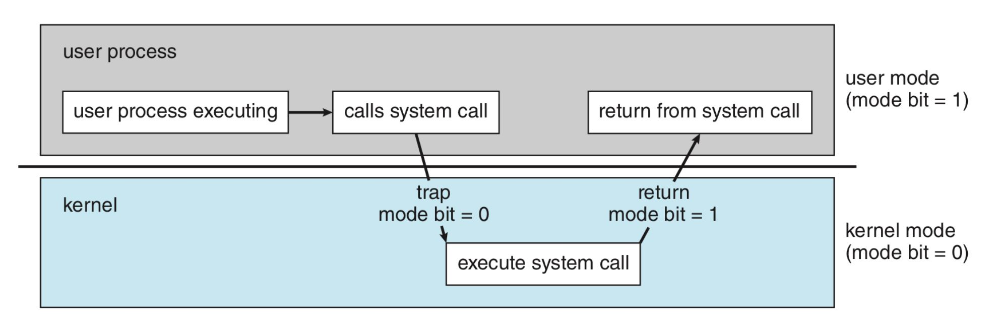
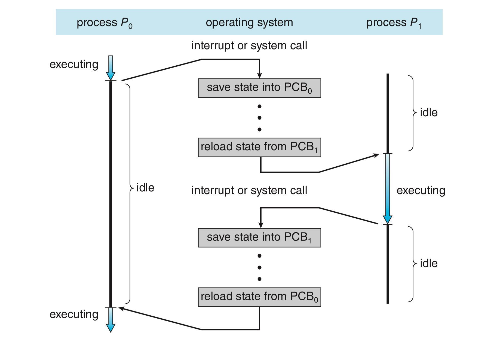
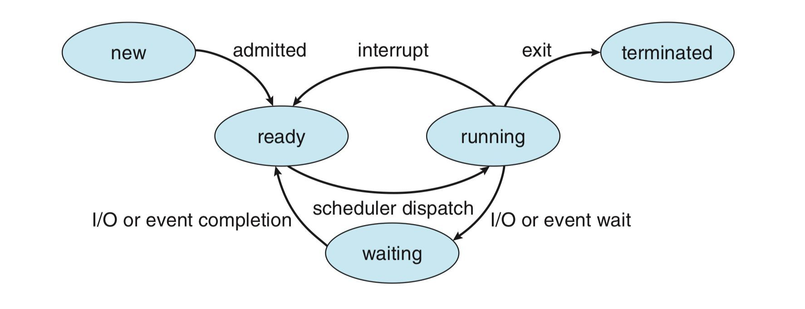
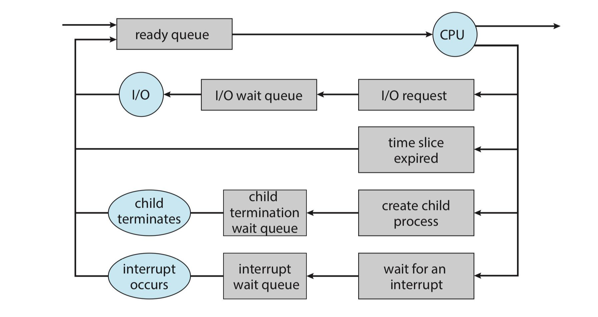
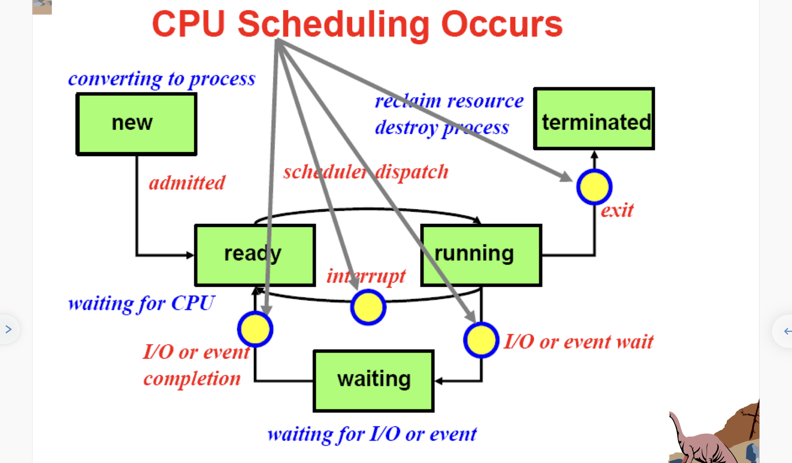
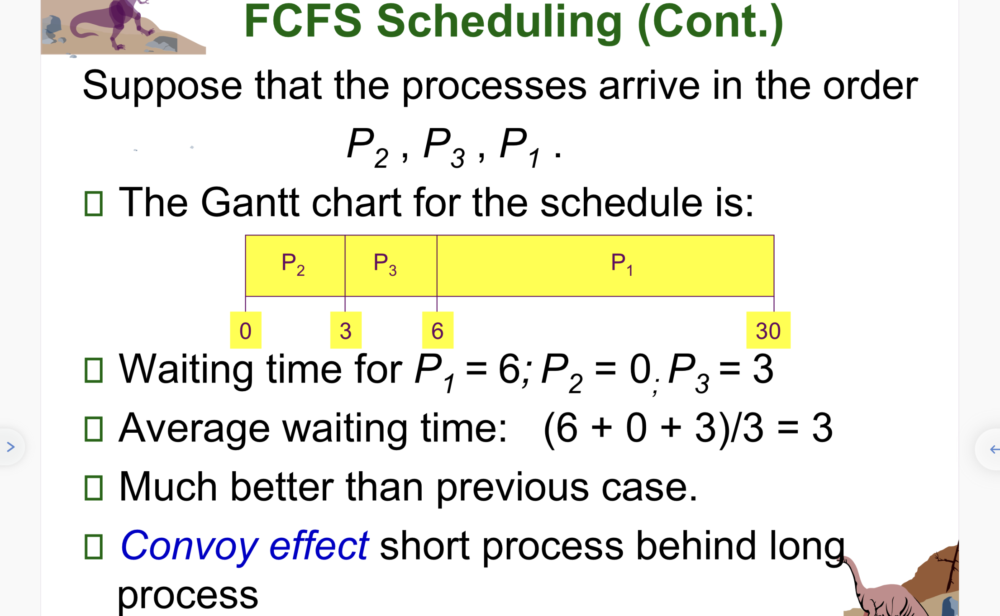
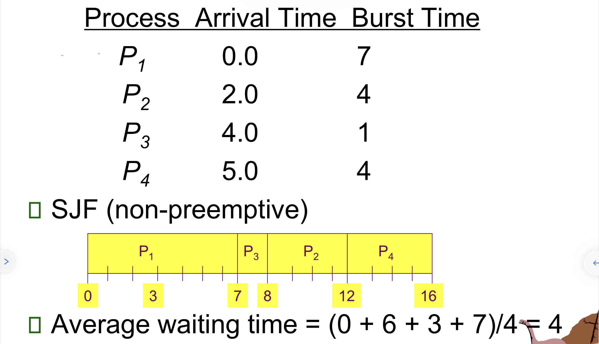
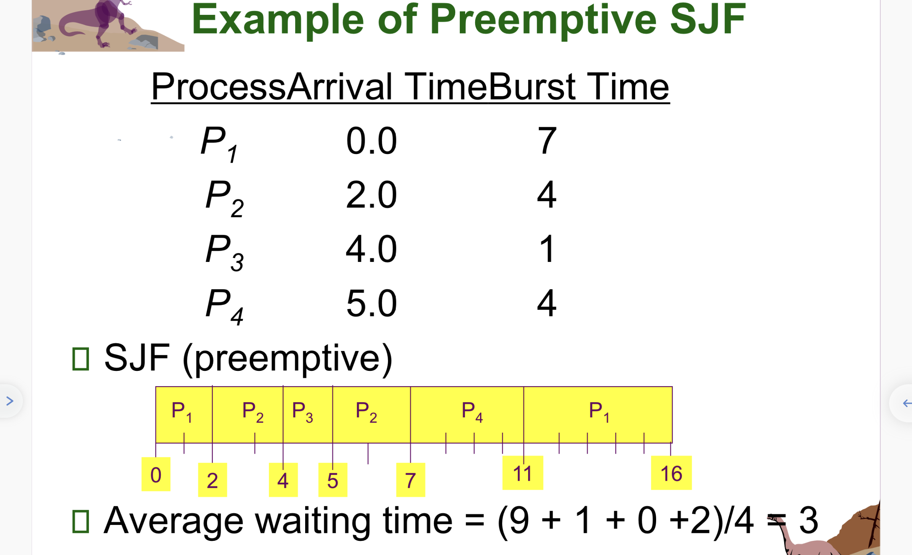

Operating System
Last updated on November 23, 2022 pm
“This is the basic class for CS.”
“And it is interesting. I mean if you can totally master it.”
Concept
Framework of this chapter:
- basic concepts
- OS components
- OS services (Using components)
- System call (how to provide services)
- Structure
- virtual machine
These contents will be detailed written in the following chapters
Operating system components
Process management
process: A process is a program in execution.
- program has its own address space
OS activities:
- Process creation and deletion
- using fork system call
- Process suspension and resumption (挂起或恢复)
- Provision of mechanism for:
- process synchronization (进程同步)
- such as two processes should share a variable to achieve a task or job. And synchronization mechanism helps to finish this job in a proper order.
- process communication (进程通信)
- deadlock handling (死锁处理)
- process synchronization (进程同步)
Main memory management
memory: Memory is a large array of words or bytes, each with its own address. It is a repository of quickly accessible data shared by the CPU and I/O devices.
Main memory or primary storage is a volatile storage device (掉电易失设备).
OS activities:
- Keep track of which parts of memory are currently being used and by whom.
- Decide which processes to load when memory space becomes available (Job scheduling, 任务调度).
- Allocate and deallocate memory space as needed.
Virtual memory: Virtual memory allows programs to address memory from a logical point of view. This technique allows applications regard that they have a continuous address space rather than fragmented spaces from main memory to disk memory.
- without regard to the limits of physical memory.
File management
file: A file is a collection of related information defined by its creator. Commonly, files represent programs (both source and object form) and data.
- this a uniform logical view of information storage provided by OS.
OS activities:
- File creation and deletion.
- Directory (can be seen as a special file) creation and deletion.
- Support of primitive for manipulating files and directories.
- Mapping files onto secondary storage.
- for large files, how to map them onto secondary storage?
- File backup (备份) on stable (nonvolatile) storage media.
Windows file management is related to storage, but Linux not. In Linux, every thing is file, having a unified form to access files.
Mount (挂载): create a mounting point, and this file is can be accessed using mounting point.
I/O system management
The I/O subsystem consists of:
- a buffer-caching system
- a general device-driver interface (a driver is a part of OS, specific for devices)
- programmed I/O
- interrupt I/O
- DMA
- drivers for specific hardware devices
Secondary-storage (disk) management
Secondary storage is the principle on-line storage medium (线性存储介质) for both programs and data.
- disk
- Main memory is volatile and too small to accommodate all data and programs permanently, so the computer must provide secondary storage to back up main memory.
OS activities;
- Free space management (which parts of disk are free and how to allocate these free blocks)
- Storage allocation
- Disk scheduling (磁盘调度)
- 磁头移动, 请求分布在不同柱面上, 相应时需要磁头在不同不同柱面上切换, 经过算法, 设计磁头移动的最短距离 (有计算题).
Protection system
Protection refers to a mechanism for controlling access by programs, processes, or users to both system and user resources.
- distinguish between authorized and unauthorized usage.
- specify the controls to be imposed and means for enforcement.
Example:
In Linux, file access control: rwx, owner, user(u), group(g), other(o)
Command-interpreter system
Command-interpreter system(命令行解释系统): Interact with users, users can send instructions to OS.
- Shell
- its functions is to get and execute the next command statement.
Operating system services
Core operating system services
From the view of an user:
Program execution
- load a program into memory and to run it
- process management, memory management, disk management and so on.
I/O operations
- user programs cannot execute I/O operations directly, the OS must provide some means to perform I/O.
File-system manipulation
- programs capability to read, write, create and delete files
Communication
- exchange information between processes
Error detection
- ensure correct computing in CPU, memory hardware, I/O devices, user programs
Additional operating system functions
From a view of system:
This part is user for efficient system operations, not for helping users.
- Resource allocation
- Accounting
- Protection
System call
An user how to use system services:
Normally, we write C code and define the main function, this is a system call, but has been packaged to a convenient-to-use API.
System call is an interface between a running program and the OS.
- generally available as assembly-language instructions. (汇编语言形式呈现)
- user programs (in user mode,
mode bit=1) send asystem callto the OS (in kernel mode,mode bit=0), and the OS execute the system call, then the OS returns (and change the mode bit to 1), finally the user programs continue to execute. - Common in the OS
- Some language like
Clanguage andC++are defined to replace assembly-language for system programming, which allow system call to be made directly.

The implementation of system call
Typically, a number (index) associated with each system call.
- System call interface maintains a table indexed according to these numbers
The system call interface invokes intended system call in OS kernel and returns status of the system call and any return values. (系统调用的接口使用OS内核中的系统调用, 并返回系统调用状态和相应参数)
The caller need to know nothing about how the system call in implemented.
- just need to obey API and understand what OS will do as a result call.
- Most details of OS interface hidden from programmer by API
- manage run-time support library (set of functions built into libraries included with compiler)

In this picture, open() function acts as an API, and open() gives a system call (in the function library) to OS (maybe in the library, open() function use other system functions to give a system call, because open() is just an API of system call functions). Then the OS look up this system call in its number table and then execute a specific system program (according to the index number). Finally, the OS returns the states.
Parameter passing in system call
Often, more information is required than simply identity of desired system call.
Three types:
- simplest: pass the parameters in registers
- maybe more parameters than registers
- Parameters stored in a block, or table, in memory. and pass the block address to registers.
- taken by Linux and Solaris
- Parameters placed, or pushed onto the stack by program and popped off the stack by the OS.
Block and stack don’t limit the number and the length of parameters.
Types of system call
Five main types:
- process control
- file management
- device management
- information maintenance
- communication
process management
| call | description |
|---|---|
pid=fork() |
create a child process identical to the parent (child is same with parents process) |
pid=waitpid(pid, &statloc, options) |
wait for a child to terminate |
s=execve(name, argv, environp) |
replace a process’ core image, can be used with fork() to let child do another things but both from parents process |
exit(status) |
terminate process execution and return status |
file management
| call | description |
|---|---|
fd=open(file, how, ...) |
open a file for reading, writing, or both, fd is 文件描述符 |
s=close(fd) |
close an open file |
n=read(fd, buffer, nbytes) |
read data from a file into a buffer |
n=write(fd, buffer, nbytes) |
write data from a buffer to file |
position=lseek(fd, offset, whence) |
move the file pointer |
s=stat(name, &buf) |
get a file’s status information |
mkdir() |
create a new directory |
rmdir() |
remove an empty directory |
link() |
create a new entry, name2, pointing to name2. (soft link) |
unlink() |
remove the directory entry |
mount() |
mount a file system |
unmount() |
unmount a file system |
miscellaneous system call
| call | description |
|---|---|
chdir() |
change working dir |
kill() |
send a signal to a process |
chmod() |
change a file’s protection bits |
time() |
get the elapsed time since Jan 1, 1970 |
System structure
monolithic单体结构（一个进程） 分层式 微内核结构（最核心的功能放在内核中）、模块化结构（linux）
UNIX
have no concept of structure, is Single core structure.
consists of two separable parts:
- system programs
- the kernel
Microkernel
assign only a few essential functions to the kernel
- address spaces
- interprocess communication (IPC)
- basic scheduling
Modules
most modern OS implement module method:
kernel is divided into different modules.
层次化不明显；可以动态对内核进行装载和删除内核模块
Virtual machine
treats hardware and the OS kernel as though they were all hardware (对物理资源抽象，即抽象层，在抽象层能实现虚拟机)
management application:
- type 1: built on hardware
- use hardware directly
- usually used in data center or service
- type 2: built on the OS
- lower performance (性能)
- lower security
- usually used on PC
Process
Concept of process
What is a process?
- A program in execution
- An instance(实例) of a program running on a computer
- 同样代码跑两遍，是不同的进程
- The entity(实体) that can be assigned to(指派) and executed on a processor
- A unit of activity characterized by the execution of a sequence of in instructions, a current state, and an associated set of system resources(一系列指令执行，状态(如wait, execution, ready)，有资源)
Process in memory
- text 代码段(
addr=0)- code
- codes are complied and stored here
- data 数据段
globaldatastaticdata
- heap 堆
new()delete()
- stack 栈(
addr=max)- local function invoking
- local variables calling
example:
1 | |
x and b are in data sector; a and f1() are in stack; pointer points to a space of heap.
HINT: there is a flexible space between heap and stack.
Process elements
- program code (possible shared)
- a set of data
- a number of attributes describing the state of the process
Trace of the process
The behavior of an individual process is shown by listing the sequence of instructions the are executed. (指令按序执行)
This list is called a trace.
Dispatcher is a small program which switches the processor from one process to another. (进程切换)
User-view of process
Process creation
The OS builds a data structure to manage the process.
-
Traditionally, the OS create all processes
-
But it can be useful to let a running process create another
- This action is called process spawning (进程派生)
- Parent process is the original, creating processes
- Child process is the new process
- Parent process create child process, and child processes create other processes, forming a tree of process.
- This action is called process spawning (进程派生)
-
Execution (can be set manually)
- parent processes and child processes execute concurrently (同时执行).
- parents wait when children terminate
HINT: the children just copy a status of parent
| command | description |
|---|---|
fork |
system call creates new same process |
exec |
system call used after a fork to replace the process’ memory space with a new program |
The differences using fork() in parents and children processes
fork返回给child_pid在两个进程中不一样. 在父进程中
fork()的返回值大于零, 即子进程的编号; 在子进程中fork()的返回值是0.可以理解为父进程在
fork()的初期产生了子进程, 此时子进程拿到的返回值是初始化的返回值 0, 在父进程即将结束fork()时, 父进程拿到了被赋值的返回值. 因此在子进程中不会再次执行fork(), 而执行其后面的内容.子进程不会再次执行父进程先前的内容, 只是创建时与父进程处于相同的状态.
父子进程执行的先后顺序取决于 OS 的调度
example 1:
1 | |
example 2:
1 | |
And the running result is:
Process termination
Process executes last statement and asks the OS to delete it. (exit())
- Output data from child to parents (via
wait()) - Process’ resources are de-allocated (收回) by the OS
Parents may terminate the execution of children processes. (abort())
Some situations of this:
- Child has executed allocated resources
- Task assigned to child is non longer required
- Parent is exiting
- OS does not allow child to continue if its parent terminates
- Cascading termination (级联终止)
- HINT: 父进程结束不代表子进程必须结束
Code block
creating process:
int fork(void);
- create a new process that is exact copy of current one
- returns process ID of new process in parent
- return 0 is child
int waitpid(int pid, int *stat, int opt);
- pid: process to wait for, or -1 for any
- stat: will contain exit value, or signal
- opt: usually 0 or WNOHANG (?what’s this)
- return: process ID or -1 if error
deleting process:
void exit(int status);
- current process ceases to exit
- status shows up in waitpid(shifted)
- by convention, status of 0 is successful, non-zero is error
int kill(int pid, int sig);
- sends signal
sigtp to processpid sig=SIGTERM: most common value, kills process by default- application can catch ti for “cleanup”
sig=SIGKILL: stronger, kills process always
running programs:
int execve(char *prog, char **argv, char **envp);
int execlp(char *prog, char *arg, ...);
Kernel view of process (using Process Control Block, PCB)
Main problem: How to manage such many process?
For traditional UNIX process: process is an abstraction of OS, which represents what is needed to run a program.
- often called a “HeavyWeightProcess”
- while a thread is called “轻量级”
This traditional process has two parts:
- sequential program execution stream. (now is thread)
- code executed as a sequential stream of execution (thread)
- includes states of CPU registers
- protected resources
- main memory state
- IO state
Process Elements
- identifier
- state
- priority
- program counter (in fact has many registers, not only the PC)
- memory pointers
- context data
- IO status information
- accounting information
- and so on
Implementing process
内核如何实现一个进程? 管理一个进程?
keep a data structure for each process
- process control block (PCB)
- called “proc” in Unix and “task_struct” in Linux
track states of process ----“Process State”
- running, waiting, ready…
includes information necessary to run
- registers, virtual memory mapping, open files…
Various other data about the process
- such as user/groups…
PCB is also a snapshot of a process, saving all status of a process.
Process states
new: the process is being created
ready: the process is waiting to be assigned to a processor
running: instructions are being executed
waiting: the process is waiting for some event to occur
terminated: the process has finished execution
The process switching graph is shown as following:

The CPU switch from process to process:

when to switch processes:
- interrupt
- trap
- current process running is wrong
- system call
switch steps:
- save context of processor including program counter and other registers
- update the PCB that is currently in the Running state
- move the PCB to appropriate queue
- select another process for execution
- update the PCB of the process selected
- update memory-management data structures
- restore context of the selected process
Process scheduling queues
Job queue: set of all processes in the system
Ready queue: set of all processes residing in main memory, ready and waiting to execute
Device queue: set of processes waiting for an I/O device
Process migration between the various queue.

Scheduler
Long-term scheduler(Job scheduler): select which processes should be loaded into memory for execution.
Short-term scheduler(CPU scheduler): selects which process should be executed next and allocates CPU
Short-term scheduler is invoked very frequently (milliseconds----must be fast)
Long-term scheduler is invoked very infrequently (seconds, minutes----may be slow)
The long-term scheduler controls the degree of multiprogramming
- IO-bound process: spends more time doing IO than computations, many shout CPU bursts
- CPU-bound process: spends more time doing computations, few very long CPU burst
We also have Medium-term scheduler
Inter-process communication
Cooperating process
Independent process cannot affect or be affected by the execution of another process.
Cooperation process can affect or be affected by the execution of another process.
Communication models
message model
- smaller data exchange
- inter-computer communication (跨机的通信)
- system call with kernel
shared memory
- Maximum speed/memory
- convenience of communication
- protection and synchronization
- routine memory access without kernel intervention
Producer-Consumer Problem:
Paradigm for cooperating processes, producer process produces information that is consumed by a consumer process
POSIX shared memory example
| Cmd | description |
|---|---|
shmget() |
A process creates a shared memory segment using this function |
shmctl() |
the original owner of a shared memory segment cna assign ownership to another user with this function |
shmat() |
Once created, a shared memory segment can be attached to a process address space using this |
shmdt() |
shared segment can be detached using this |
Inter-process Communication(IPC)
Two operations:
- send(message)
- receive(message)
if P and Q wish to communicate, they need to
- establish a communication link between them
- exchange messages via send/receive
Direct Communication
-
Processes must name each other explicitly:
send(P, message)----send a message to Preceive(Q, message)----receive message from Q
-
Properties of communication link:
- links are established automatically
- a link is associated with exactly one pair of communication processes
- between each pair processes, there exists exactly one link
- the link may be unidirectional, but is usually bidirectional
Indirect Communication
-
Operations:
- creates a new mailbox
- send and receive messages through mailbox
- destroy a mailbox
-
Primitives are defined as:
send(A, message)----send a message to mailbox Areceive(A, message)----receive a message from mail box A
-
Problems: P1, P2 and P3 share mailbox A, P1 sends, P2 and P3 receive, who get the message?
- Allows a link to be associated with at most two processes
- Allow only one process process at a time to execute s receive operation
- Allow the system to select arbitrarily the receiver. Sender is notified who the receiver was.
Synchronization Message passing may be either blocking(阻塞), or non-blocking(非阻塞)
Buffering:
- zero capacity
- bounded capacity
- unbounded capacity
Pipe | or Pipe(), there is a read end and a write end
Three communication methods
- shared memory
- pipe
- sockets
Threads
Concept
A thread (lightweight process, LWP) is a basic unit of CPU execution.
- a sequential execution stream within process
A thread has a thread ID, a program counter, a register set and a stack.
A thread shares with each other threads in the same process its code section, data section, and other OS resources(e.g. files and signals)
Multithreading: a single program made up of a number of different concurrent activities.
Actual thread operations
| cmd | description |
|---|---|
thread_fork(func, args) |
create a new thread to run func(args) |
thread_yield() |
relinquish processor voluntarily |
thread_join(thread) |
in parent, wait for forked thread to exit, then return |
thread_exit() |
quit thread and clean up, wake up joiner if any |
pThreads: POSIX standard for thread programming
thread switching faster than process switching(100 ns)
User Thread
thread management done by user-level thread library:
e.g. POSIX Pthread, Mach C-threads, Solaris UI-threads
User thread are supported at the user-level, the kernel is not aware of user threads(kernel treat them as processes). A library provides all support for thread creation, termination, joining and scheduling. There is no kernel intervention and hence, user threads are more efficient. Unfortunately, since the kernel only recognizes the containing process (of the threads), if one thread is blocked, every other threads of the same process are also blocked because the containing process is blocked.
Kernel Threads
Supported by the kernel. Kernel maintains context information for the process and the threads.
Kernel threads are directly supported by the kernel. THe kernel dose thread creation, termination, joining and scheduling in kernel space. Kernel threads are usually slower than the user threads. However, blocking one thread will not cause other threads of the same process to block. The kernel simply runs other threads In a multi-processor environment, the kernel can schedule threads on different processors.
The kernel has a thread table that keeps track of all the threads in the system. All calls that might block a thread are implemented as system calls. When a thread blocks, the kernel can run either another thread from the same process or a thread from a different process.
Multi-threading Models
Many-to-one
Many user-level threads mapped to single kernel thread. Used on system that do not support kernel thread.
One-to-one
Each user-level thread maps to kernel thread.
Many-to-Many
Allow many user threads to be mapped to many kernel threads.
Allows the OS to create a sufficient number of kernel threads.
Threading Issues
Semantics of fork() and exec()
Does fork() duplicate only the calling thread or all threads? (应该复制所有线程还是指定线程)
- if invoke
exec()just afterfork(), no need to duplicate all threads, since it is no meaning to duplicate all threads now that they will be replaced right afterfork() - if invoke
exec()afterfork()for a long time, it will duplicates all threads
Thread Cancellation
Terminating a thread before it has finished, two general approaches:
- Asynchronous cancellation (terminate thread immediately)
- Deferred cancellation (thread check itself if it should be cancelled periodically)
Signal handling
Signal is used to notify a process that a particular event has occurred. All signal has same patterns:
- generated by particular event
- delivered to a process
- signal is handled
A signal handler is used to process signals
options
- deliver the signal to the thread to which the signal applies
- deliver the signal to every thread in the process
- ~ to certain threads
- Assign a specific thread receive all signals for the process
Thread Pools
Create a number of threads in a pool where they await work.
Advantages
- Usually slightly faster to service a request with an exiting thread than create a new thread.
- Allows the number of threads in the application(s) to be bound to the size of pool.
Thread Specific Data
Allows each thread to have its own copy of data
Scheduler Activations
Both M:M and Two-level models require communication to maintain the appropriate number of kernel threads allocated to the application
一种解决解决用户线程库和内核间通信的方法被称为 调度器激活.
Scheduler activations provides upcalls, a communication mechanism from the kernel to the thread library. 上级调用用于告知用户程序特定的事件
CPU Scheduling (Important!)
Objective: design a scheduling algorithm for CPU. (select time point, select jobs to execute)
Maximum CPU utilization obtained with multiprogramming
CPU-I/O Burst cycle: Process execution consists of a cycle of CPU execution and I/O wait.
Process execution repeats the CPU burst and I/O burst cycle. When a process begins an I/O burst, another process can use the CPU for a CPU burst.
CPU, I/O bound
- CPU bound: a process generates I/O requests infrequently, using more of its time doing computation
- I/O bound: a process spends more of its time to do I/O than doing computation
CPU Scheduler: When the CPU is idle, the OS mus select another process to run. The selected process is carried out by the short-term scheduler(CPU scheduler). The CPU scheduler selects a process from the ready queue, and allocates the CPU resources to it. The ready queue does not have to be a FIFO one. There are many ways to organize the ready queue.
Circumstances that scheduling may take place
- running -> wait (e.g. doing for I/O)
- running -> ready (e.g. interrupt occurs)
- wait -> ready (e.g. I/O completion)
- terminates

Non-preemptive scheduling (非抢占式调度): scheduling occurs when a process voluntarily enters the wait state or terminates----simple, but very inefficient
Preemptive scheduling (抢占式调度): scheduling occurs in all possible cases.
Dispatcher: gives control of the CPU to the process selected by the short-term scheduler, involves: switching context, switching to user mode, jumping to the proper location in the user program to restart that program.
Dispatcher latency: time it takes for the dispatcher to stop one process and start another running
Scheduling Criteria (调度准则)
Five common ones:
- CPU utilization (max)
- want to keep CPU as busy as possible
- throughput (吞吐量) (max)
- the number of processes completed per time unit
- long processes: rate is low, short processes: rate is high
- turnaround time (周转时间) (min)
- the time period between job submission to completion
- including:
- waiting time before entering the system
- waiting time in the ready queue
- waiting time in all other events (e.g. I/O)
- time the process actually running on the CPU
- waiting time (min)
- the sum of the periods that a process spends waiting in the ready queue. (because CPU scheduling algorithm do not affect the amount of time during which a process is waiting for I/O and other events, so we consider waiting time in ready queue only)
- response time (min)
- the time from the submission of a request to the first response (in an interactive system).
- do not include the time that it takes to output the response
Scheduling Algorithm
- First-Come, First-Served (FCFS)
- Shortest-Job-First (SJF)
- Priority
- Round-Robin
- Multilevel Queue
- Multilevel Feedback Queue
FCFS
description: the process that requests the CPU first is allocated the CPU first
Queue
Non-preemptive: once a process has the CPU, it will occupy the CPU until the process completes or voluntarily enters the wait state.
Gantt Chart

average waiting time: calculate
convoy effect (护航效应): short processes behind long processes
disadvantages
- convoy effect: all the processes wait for one big process to get off the CPU. CPU utilization may be low.
- not be fair to those short ones.
- troublesome for time-sharing system, where each user needs to get a share of the CPU at regular intervals.
SJF
use each process’ CPU burst length----shortest the first: when a process must be selected from the ready queue, the process with smallest next CPU burst is selected. The processes in the ready queue are sorted in CPU burst length
if non-preemptive: once the CPU is given to the process, it cannot be preempted until completes its CPU burst
if preemptive: if a new process arrives with less CPU burst length than remaining time of others, it will be selected immediately.
- shortest-remaining-time-first(SRTF)
SJF is optimal: gives minimum average waiting time for a given set of processes.
some examples:


how to know the next CPU burst?
predict: using the length of previous CPU bursts, using exponential averaging
- actual length of CPU burst
- predicted value for the next CPU burst
this is a weighted equation for history data and current data
disadvantages
- difficult to estimate the next burst time value accurately
- in favor of short jobs. some long time jobs have no chance to run. (starvation)
Priority
Priority may be determetered internally or externally. FCFS and SJF are the special cases of Priority.
non-preemptive
preemptive: if the newly arrived process has higher priority, it is selected.
but indefinite block (or starvation) may occur: a low priority process may never have a chance to run
method:
Aging: gradually increases the priority of processes that wait in the system for a long time. It is a technique to overcome the starvation problem.
Round Robin (RR)
Similar to FCFS, except that each process is assigned a time quanntum
- All processes are in the ready queue (FIFO list). When the CPU is free and lets it run for one time quantum.
- If a process uses CPU for more than one time quantum, it is moved to the tial of the list.
Some issues
- if time quantum is too large, RR reduces(退化) to FCFS
- if time quantum is too small, RR becomes processor sharing
- context switching may affect the performance of RR, shorter time quantum means more context
- turnaround time dependes on the size of time quantum
- in general, 80% of the CPU burst should shorter than the time quantum
Multilevel Queue (多级队列)
Ready queue is partitioned into separate queues:
foreground (interactive),
background (batch)
[ 有些进程希望保留在系统中(交互进程)，而有些进程则是后台进程，因此可以延迟执行。]
Each process is assigned permanently to one queue based on some properties of the process
Each queue has its own scheduling algorithm:
- foreground, interactive----RR
- bacjground, batch----FCFS
Hint
scheduling must be done between the queue:
- fixed priority scheduling(i.e. serve all from foreground then from background); Possibility of starvation.
- time quantum, each queue gets a certain amount of CPU time which it can amongst its processes
Multilevel Feedback Queue (多级反馈队列)
allows processes to move between queues. (can be implemented by aging)
if a processe uses more CPU time, it is moved to a queue of lower priority.
defined my the following parameters:
- numbers of queues
- scheduling algorithm for each queue
- method used to determine when to upgrade a process
- method used to determine when to demote a process
- method used to determine which queue process will enter whne that process needs services
Multiple-Process scheduling
Symmetric multiprocessing–self scheduling for each processor
Affinity(亲和性)–cost of cache: 当进程在 CPU 间切换时, 需要对 cache 进行重构. 需要避免 cache 重构所带来的开销
Hyperthreading–logical processors seen by CPU (i.e. by setting BIOS)
Thread scheduling
Local scheduling–how the threads library decides which thread to put onto an available LWP
Global scheduling–how the kernel decides which kernel thread to run next
Algorithm Evaluation
no notes here.
Process Synchronization
进程合作时, 几个进程之间会相互影响. 合作的进程要么会直接共享逻辑地址空间 (即代码和数据), 要么通过共享内存或信息传递的方式进行通信. 但是并发的进程对数据操作可能会导致数据的不一致, 因此需要进程间进行同步.
进程同步–抽象为临界区问题–提出三种解决方案 (软件方案, 硬件方案, 信号量方案)–经典同步问题–管程 (相对高级的同步结构)–补充例子
Background
Concurrent access to shared data may result in data inconsisitency. Maintaining data consistency requires mechanisms to ensure the orderly execution of coorperating processes. Such as producer-consumer problem need a mechanism to ensure the order of execution.
Race Condition
Race condition occurs, if:
- 2 or more processes/threads access and manipulate the same data concurrently
- the outcome of the execution depends on the particular order in which the access takes place.
to prevent race conditions, concurrent processes must be synchronized
the critical-section problem (临界区问题)
Each process has a code segment, called critical-section, in which the shared data is accessed.
Problem: ensure that when one process is executing in its critical section, no other process is allowed to execute in its critical section. So it’s necessary to design a protocol that processes can use to cooperate.
A protocol consists of two parts: entry section and exit section. Between them is the critical section running in a mutually exclusive way.
condition must be followed
- Mutual exclusion (互斥)
- If there is a process exexuting in critical section, the entry protocol should be capable of blocking processes that wish to enter. And if the process in critical exits, the entry protocol must know the fact, and allows a waiting process to enter.
- Progress (前进/有空让进)
- If no process is executing in its critical section and some processes wish to enter critical sections, then only those processes that are waiting to enter can participate in the competition; no other process can influent the decision; this decision cannot be postponed indefinitely (不可无限推迟).
- Bounded waiting (有限等待)
- After a process made a request to enter its critical section and before it is granted the permission to enter, there exits a bound on the time to wait (it means that, a process will not wait forever to enter it critical section).
HINT:the solution to critical-section problem cannot depend on relative speed of processes and scheduling policy.
We should design a solution to satisfy the three condition.
(临界区问题需要满足以上三种条件)
For two process condition: (Peterson algorithm, Important!)
1 | |
Synchronization hardware
Two types: disabling enabling interrupts close interrupt if a process in critical section; Special machine instructions.
Interrupt disabling
Because interrupts are disabled, no context switch will occur in a critical section. Infeasible in a multiprocessor system because all CPUs must be informed. Some features that depend on interrupts (e.g. clock) may not work properly.
Using Atomaical instructions
Test and modify the content of a word atomically.
atomical instructions mean an instruction that can’t be devided or interrupted.
Test-and-Set
1 | |
the TestAndSet() function realizes that it changes all processes’ status to enter critical section, but keeps the old value of one process which is going to enter critical section. This function satisfies Mutual Exception rule. However, this mathod not satisfies Bounded Waiting rule.
Change TestAndSet to satisfy Bounded Waiting:
1 | |
Though this is a code form, but TestAndSet() is realized in hardware form.
Swap
1 | |
***The Swap() function will swap the value of lock and key, if ***
Semaphores (信号量, Important!)
Most used~
Programmer-frendly~
信号量可以看作是对资源数量的衡量, 用于临界区问题时, 由于临界区只有一个, 因此信号量设置为1.
1 | |
semaphore algorithm satisfies three rules. semaphore is like a lock. wait() lock, and signal() delock.
the disadvantage is semaphore makes other processes busy waiting, which do nothing while waiting. for single CPU, it waste CPU resource. this is spinlock. spinlock is usually used in multi-core system, one process can enter another CPU’s critical section while one process is in now critical section.
the difference waiting state:
ref:WaitingState
Optimization: no busy-waiting
Makes one process not to busy-wait but to block itself or mounted.
1 | |
Deadlock
two or more processes are waiting indefinitely for an event that can be caused by only one of the waiting processes.
Starvation
indefinite blocking. A process may never be removed from the semaphore queue in which it is suspended.
Classical problems of Synchronization
- bounded-buffer problem
- reader and writer problem
- dining philosophers problem
Bounded buffer problem
生产者消费者问题: 存在若干生产者, 若干消费者以及一个缓冲区.
1 | |
Reader-Writer Problem
以数据库为背景, 同时有若干的写者和读者对数据库进行操作. 写时不可读, 读时不可写. 如何权衡进程通信?
第一读者问题: 读者可以一直读, 除非有写者正在写. 说白了就是读者优先级高于写者.
第二读者问题: 读者优先级低于写者.
1 | |
Dining-Philosophers Problem
问题描述: 有多个哲学家在一个圆桌上用餐. 相邻两人间放着 一支 筷子, 哲学家只能拿与自己相邻的筷子, 若拿到了两根筷子, 则可以用餐, 用完后放回. 但若只拿到一支筷子, 则等待另一支筷子并且不放下手中的筷子, 直到有两双筷子. 若一支也没有拿到, 则进行等待. 设计进程同步, 并防止 死锁.
假设有 5 个哲学家和 5 支筷子.
Method 1(exit deadlock):
1 | |
显然, 当每个哲学家都拿左边的筷子时, 会发生死锁现象.
Solution 1: 设置一个"房间"作为信号量, 房间只能一次性供四个人使用
Solution 2: 将拿起左筷子和右边筷子 (拿一双筷子) 作为一个原子操作, 将其放入临界区.
Solution 3: 规定奇数和偶数序号的哲学家遵守不同的拿筷子的顺序: 奇数先左后右, 偶数先右后左.
Monitors
Synchronization example
后面半本书没有写博客
结果是最后操作系统大寄